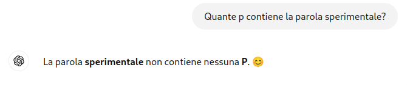
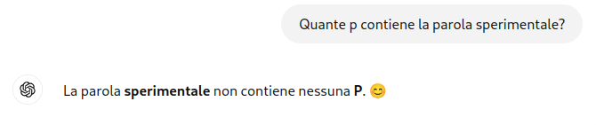

Linee guida per la stesura della Tesi di Laurea
Aggiornate al 11 Febbraio 2026Queste linee guida coprono la richiesta e la consegna della tesi di laurea in Universitas Mercatorum. Nota Bene: Si prega di far riferimento al vademecum ufficiale [1] (e di leggerlo prima di richiedere informazioni!) dell'Università. File non conformi alle indicazioni delle presenti linee guida e del vademecum verranno respinti richiedendo la lettura dei documenti. Queste linee guida riguardano lo svolgimento della tesi con me come relatore, principalmente nel campo della sicurezza informatica.
I punti riguardano sia Tesi triennali che Tesi magistrali.
TL;DR: Questo documento è lungo, non c'è TL;DR. Per svolgere la tesi dovrete leggere almeno 10/15 documenti, non fermatevi già a questo. :)
- Scadenze
- Scelta del Tema
- Richiesta della tesi
- Comunicazione
- Scrittura
- Sinossi
- Presentazione
- Plagio e Proof reading
Scadenze
Le scadenze sono indicate dall'Università. Citando il professore che mi seguì come relatore durante la scrittura della tesi triennaleBerardi, chi si deve laureare? Tu o io? E quindi chi deve sapere con certezza la data di scadenza del caricamento?.
In quest'ottica, vi chiedo di tenere traccia personalmente delle scadenze.
Ovviamente cercherò di aiutarvi al 100% delle mie possibilità, ma basatevi su quanto indicato da fonti autorevoli come uffici e documentazioni ufficiali.
Dato il numero ELEVATO di tesisti, vi chiedo di consegnare la tesi circa 10/15 giorni in anticipo rispetto alla data indicata sul sito. In caso non venga seguita questa indicazione, la tesi potrebbe essere rifiutata e annullata la partecipazione alla sessione.
Scelta del tema
Il campo della cybersecurity è molto vasto. Ci sono varie scelte possibili di temi:- Scelta libera basata su alcuni articoli che potete trovare su scholar.google.com (almeno 2 e recenti, massimo di 5 anni fa).
- Scelta personale basata su temi di interesse (e.g. cosa fate a lavoro).
- Scelta riguardante i miei temi di ricerca.
Come consiglio personale: NON usate l'intelligenza artificiale per scrivermi le email. Me ne accorgo abbastanza spesso e non lo ritengo professionale, nonostante il linguaggio sia particolarmente aulico e bello da vedere. :)
Richiesta della tesi
Per richiedere la tesi è necessario inviare (possibilmente dal vostro indirizzo istituzionale @studenti.unimercatorum.it) una mail contenente queste informazioni:- Destinatario:
davide.berardi+tesi@unimercatorum.it - Oggetto: Richiesta Tesi "Nome Cognome"
- Nome e cognome
- Sessione di laurea
- Tipologia di tesi¹
- Tema di riferimento
Le comunicazioni riguardanti la tesi devono essere inviate come risposte nello stesso thread della prima mail.
¹ Le tesi si dividono in due categorie: "Compilative" e "Sperimentali". Le prime prevedono la scrittura di una relazione su un tema (e.g. "la crittografia post-quantistica") non generando nessun dato personalmente (ma, ovviamente scrivendo tutto il corpo della tesi senza copiare, fare riferimento al capitolo "Plagio e proof reading"). Le seconde invece prevedono la creazione di programmi, documenti ausiliari o prove di laboratorio di proprio sviluppo (e.g. "analisi di attacchi su diversi sistemi operativi embedded". Le seconde ovviamente possono ambire (in media, non è una regola) a punteggi più alti.
Comunicazione
Se la tesi viene caricata in piattaforma senza un'adeguata comunicazione precedente è possibile che venga rifiutata per le seguenti motivazioni:
- Plagio elevato;
- Non rispetto delle regole rilasciate dall'Università;
- Livello dei contenuti non adeguato per una tesi di laurea (e.g. tesi scritta con ChatGPT).
Non è necessario inviare la tesi capitolo per capitolo. Quando vi sentite pronti, potete inviare alcune parti per capire se state procedendo nella direzione giusta.
Richiedo comunque alcuni update durante la stesura della tesi, p.e. durante lo sviluppo di un eventuale applicativo, fatevi sentire. :)
Evitate di inviare la tesi per sistemi alternativi alle semplici e-mail (Meet, Teams, onedrive, Google Drive o Telegram).
Evitate di inviare la tesi non in formato PDF (DOCX, ODT, ...). Il formato PDF è quello da consegnare sul sito ufficiale, consegnando altro potrei perdere problemi tipografici.
Non aspettatevi risposte immediate! Leggo la mail ogni giorno ma le mail delle tesi richiedono un certo impegno (soprattutto le revisioni), rispondo in media dopo un paio di giornate. Non leggo la mail (a parte casi particolari) nei weekend e nelle giornate festive. ;)
Scrittura
- La tesi può essere scritta in Word o LaTeX (a parte casi particolari da indicare nella prima mail), quest'ultimo linguaggio è molto più elastico di Word nella tipografia. Potete usare editor online come overleaf[2]
- È necessario inserire estratti di
codice, tabelle o immagini nella
tesi quando questi aiutano la
comprensione dell'argomento. Se
pensate di stare scrivendo una
parte molto tecnica e poco
comprensibile al lettore,
aiutatevi con le immagini o con
il codice.
Al contrario, inserire solo spezzoni di codice con poca spiegazione è fortemente sconsigliato (anche se questo contiene tanti commenti).
Se il codice o le immagini non sono vostre (o se le avete modificate in minima parte), citate la fonte.
Ogni immagine va spiegata nel corpo della tesi riferendosi direttamente e deve avere una breve didascalia, lo stesso vale per i frammenti di codice.
Le immagini inserite devono essere leggibili in ogni parte e non occupare troppo spazio, inserire un'immagine con scritte illeggibili è equivalente a inserire un'immagine enorme. -
La struttura della tesi (in questo caso sperimentale)
dovrebbe ricalcare questa scaletta:
- Introduzione. da scrivere alla fine, un breve riassunto su cosa si andrà ad affrontare nella tesi.
- Scenari applicativi e stato dell'arte. Cosa stiamo affrontando, p.e. una tesi che propone un attacco a HTTPS dovrebbe spiegare bene come funziona la parte di HTTPS attaccata e quali sono le limitazioni.
- Analisi progettuale.. Cosa vogliamo raggiungere, perché e quali sono state le vostre scelte per lo sviluppo "su carta".
- Implementazione. Come abbiamo implementato il programma, se ci sono state scelte particolari o punti particolarmente ostici che sono stati superati. Se ci sono state difficoltà insormontabili vanno spiegate.
- Risultati.
Descrivete e inserite
qui gli esperimenti
effettuati e i dati
raccolti.
Se avete grafici e dati, presentateli in questa sezione (nella forma in cui pensate sia più facile visualizzare quello che volete far trasparire dai dati).
Scrivete sempre su che supporti hardware o software avete effettuato le prove e quante ne avete fatte (se rilevante). - Conclusione e sviluppi futuri. da scrivere alla fine, un breve riassunto di cosa si è affrontato, i risultati (se quanto indicato nell'introduzione come obiettivo è stato raggiunto) e come è possibile continuare la tesi (p.e. se qualcosa non è stato affrontato per motivi di tempo o limitazioni hardware).
-
Come potete notare NON ho indicato sotto-capitoli o, ancora peggio, sotto-sotto capitoli. Vediamo un esempio (sbagliato) generato usando ChatGPT:

A parte l'estrema generalità del tema che già non sarebbe adatto a una tesi magistrale, ahimé l'indice continuava fino a 10 capitoli. Perché è sbagliato? È molto semplice, se pensate a quando leggete un libro, trovate un capitolo ogni 10 pagine o più, in questo caso, supponendo di avere una tesi di circa 50 pagine, avremmo un capitolo ogni 5, che già risulta essere anomalo. Inoltre, con questa divisione in sotto-capitoli, avremmo un sotto-capitolo ogni pagina...o ancora peggio: più sotto-capitoli per pagina...
In sostanza, potete farvi aiutare nella stesura dell'indice da ChatGPT ma, a questo punto, se dovete correggerlo continuamente per avere un indice che vada bene, non è più semplice scriverlo voi basandovi sulle informazioni che avete? - La tesi prevede una bibliografia,
normalmente è necessario
raccogliere questa prima della
scrittura, in modo da inserire
(tramite \cite e bibTeX) delle
citazioni nel corpo della tesi.
Una tesi triennale ha bisogno di
circa 10 riferimenti
bibliografici, una magistrale
circa 15 / 20.
Questi riferimenti possono essere
trovati su siti come Google
Scholar. Esiste un sistema di accesso alla biblioteca
dell'Università, per questo vi invito a contattare
preventivamente
biblioteca@unimercatorum.it
NON consegnate tesi con riferimenti solo di "gray literature" (siti, blog, etc.) prediligete sempre articoli scientifici!!!
Sinossi
Dopo la conclusione del documento di tesi, deve essere sviluppato un documento riassuntivo denominato Sinossi. Questo documento deve essere lungo dalle 5 alle 8 pagine e riassumere la tesi.Le informazioni precise su questo documento sono indicate nel regolamento per le tesi di laurea dell'Università. Ad esempio richiede lo stesso frontespizio della tesi.
Presentazione
Solo per quanto riguarda le tesi magistrali, deve essere prodotta una presentazione.Questa parte è molto più libera rispetto al documento ed esiste una singola regola: NON SUPERARE I 10 MINUTI DI PRESENTAZIONE (ANCORA MEGLIO SE LA PRESENTAZIONE DURA 8 MINUTI).
Nonostante non vengano indicate informazioni specifiche come template o modalità di presentazione, ci sono alcuni consigli che potete seguire:
- Non apprezzo particolarmente le slide piene di testo. Prediligete immagini con qualche punto di spiegazione (massimo 3 punti).
- Potete ricalcare la struttura della tesi, con lo stesso flusso di spiegazione.
- Deve essere chiaro l'impegno che avete messo nella tesi! Ogni dato a voi disponibile come tabelle, schemi o grafici è sicuramente presentabile.
- A questo link è disponibile un template "guida" per le slide che potete usare come riferimento.
Plagio e Proof reading
Prima di inviare una revisione della tesi di laurea, assicuratevi di aver seguito questi punti:- Plagio La tesi viene ovviamente controllata accuratamente per quanto riguarda il plagio. È vietato copiare, non prendere ispirazione. Questo vuole dire che potete inserire nel vostro documento informazioni ottenute da altre fonti, ma queste non possono essere riportate nella loro forma originale. In altre parole, dovete modificare le fonti (NON IN FORMA AUTOMATICA) in modo da aggiungere un vostro parere personale.
- ChatGPT e sistemi di generazione del testo
L'uso di ChatGPT o sistemi di generazione del testo (o
immagini) non è esplicitamente vietato ma FORTEMENTE sconsigliato.
Ci sono due principali problemi con l'uso di questi
strumenti:
- Allucinazioni i sistemi di AI INVENTANO, questo implica
che i dati riportati dai sistemi possono essere estremamente vaghi e non
corretti anche se possono sembrare molto convincenti. Facciamo un rapido controllo.

Per i più curiosi, in fondo a questa pagina potete trovare un'interessante allucinazione sul codice.
Ovviamente potrebbe succedere che ChatGPT vi dia un risultato corretto, ma non nel 100% dei casi, provando diverse volte potete riscontrare questo genere di risultati.
In linea di massima vi fidereste mai se qualcuno avesse scritto con questo sistema il software dell'aereo del vostro prossimo volo? Potete capire velocemente come questo approccio non sia minimamente accettabile.
- Stile di Scrittura gli LLM tendono a scrivere in modo robotico, utilizzando molti elenchi puntati, inserendo parole auliche o frasi enormi "allungando il brodo", questo risulta essere particolarmente riconoscibile ad un occhio esperto.
Sostanzialmente, istruendo ChatGPT sul rifrasamento, proponendogli tutti i dati nel modo corretto, controllando ESTREMAMENTE bene l'output, rifrasando le parole scorrette etc può dare un valido aiuto. Cosa che, da un punto di vista personale, probabilmente risulta essere più dispendiosa rispetto a scrivere direttamente la tesi... - Allucinazioni i sistemi di AI INVENTANO, questo implica
che i dati riportati dai sistemi possono essere estremamente vaghi e non
corretti anche se possono sembrare molto convincenti. Facciamo un rapido controllo.

- Spell checking.
Passate uno spell checker su
tutto il corpo della tesi.
- Controllate apostrofi, accenti
ed errori comuni:
un altra → un'altra obbiettivo → obiettivo sopratutto → soprattutto perchè → perché é → è E' → È interfaccie → interfacce - Struttura frasi. Non fate frasi troppo lunghe, una frase in genere non deve occupare più di tre righe. Se avete un dubbio su una di queste, provate a ripeterla ad alta voce (solo espirando mentre parlate), se finite il fiato è troppo lunga. ;)
- d eufoniche. L'uso smodato
della "d eufonica" (ad, od, ed)
è indicatore di poca cura nella
scrittura della tesi. La regola
è:
- Se una parola, preceduta da una singola vocale {a,o,e}, inizia con la stessa vocale, ci vuole la d. "ad alta", "ed entrare", "od obbedire"
- Se la vocale è diversa non richede la d: "a entrare", "e obbedire", "o alte"
- Se la parola inizia con la forma eufonica, la vocale precedente non richiede la d: "o odore".
- "ad esempio" è l'unica eccezione.
- I termini inglesi in un documento Italiano vanno al singolare: Non si scrive "le system calls" ma "le system call", allo stesso modo "gli switch", "i router", etc.
[1] Disponibile qui sotto la voce "Regolamento della Prova finale e della Tesi di Laurea"
[2] https://overleaf.com